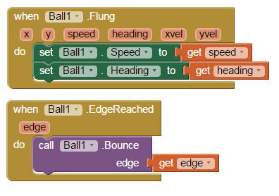

'Ball Bounce' Game
Created: February 3, 2015
This mobile application is composed of an interactive black ball which can be flung around the screen. It was created in the course Game Design 2 using MIT App Inventor, and their tutorial which can be found here.
The code, in the form of a block interface, detects when the ball sprite is moved across the screen by the user. It then moves the ball in the corresponding direction, detecting when an edge of the screen has been reached and deflecting it appropriately.
